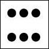
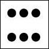

Séance1
Méthodes de sortie en JavaScript
Il existe cinq méthodes pour afficher un résultat en JavaScript
<div id="msg"></div>
<form name="f"><input type="text" id="res" name="res"></form>
<script>
/* On demande de calculer la longueur de l'hypoténuse d'un triangle rectangle ABC */
// Déclarer les variables
let a = 3;
let b = 4;
// Calculer l'hypoténuse
let c = Math.sqrt(a * a + b ** 2);
/*
Méthodes d'affichage
*/
// (1) Afficher le résultat dans la console
console.log("a =", a, "- b =", b, "- c =", c);
// (2) Afficher le résultat dans le document
document.writeln("<p>a = ", a, " - b = ", b, " - c = ", c, "</p>");
// (3) Afficher le résultat sous forme d'une notification dans une boîte d'alerte
alert("a = " + a + " - b = " + b + " - c = " + c);
// (4) Afficher le résultat dans un élément de la page
const msg = document.getElementById("msg");
msg.innerHTML = "<p>a = " + a + " - b = " + b + " - c = " + c + "</p>";
// (5) Afficher le résultat dans un champ du formulaire
document.f.res.value = "a = " + a + " - b = " + b + " - c = " + c;
</script>Activité d'application
Afficher la somme, la différence, le produit, le quotient de deux entiers a et b,
sélectionnés aléatoirement.

Code JavaScript
const a = Math.floor(Math.random() * 90 + 10);
const b = Math.floor(Math.random() * 90 + 10);
const s = a + b;
const d = a - b;
const p = a * b;
const q = a / b;
document.writeln('<p><span class="color1">', a,
'</span> + <span class="color2">', b,
'</span> = <span class="color3">', s, '</span></p>');
document.writeln('<p><span class="color1">', a,
'</span> - <span class="color2">', b,
'</span> = <span class="color3">', d, '</span></p>');
document.writeln('<p><span class="color1">', a,
'</span> * <span class="color2">', b, '</span> = <span class="color3">', p, '</span></p>');
document.writeln('<p><span class="color1">', a,
'</span> / <span class="color2">', b, '</span> = <span class="color3">', q, '</span></p>');
Code CSS
body { font-size: 20pt; }
.color1 { color: red; }
.color2 { color: green; }
.color3 { color: blue; }

 
